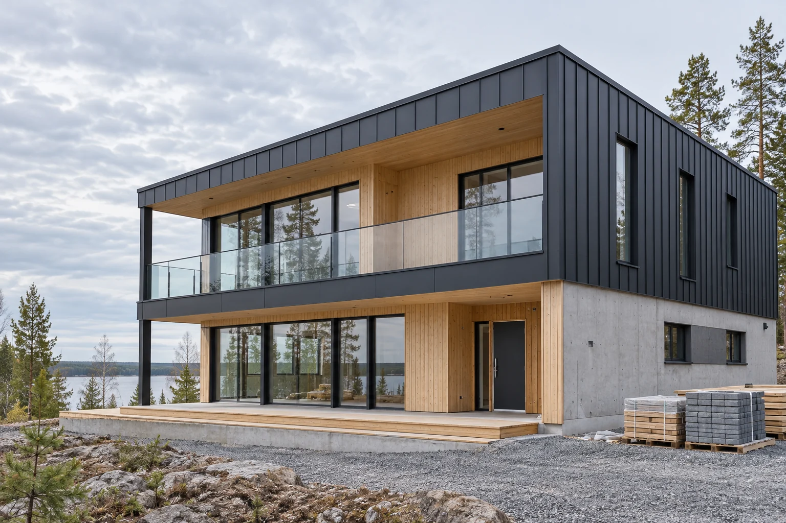

Uudisrakentaminen
Uuden kohteen rakennustyöt yhteisen suunnitelman pohjalta. Vaiheet ja vastuut sovitaan ennen toteutusta.
Kysy lisää →Rakennuspalvelut / 01
Uudisrakentamista, saneerausta ja remontteja. Yksi suunnitelma, selkeät työvaiheet ja ajantasainen tieto siitä, missä työmaa menee.

01 / Palvelut
Työn laajuus määritellään kohteen ja tavoitteiden mukaan. Toteutamme sovitun osuuden tai koko projektin.
Uuden kohteen rakennustyöt yhteisen suunnitelman pohjalta. Vaiheet ja vastuut sovitaan ennen toteutusta.
Kysy lisää →Olemassa olevan rakennuksen uudistaminen käyttötarpeita vastaavaksi. Huomioimme kohteen lähtökohdat.
Kysy lisää →Huoneistojen ja toimitilojen remontit. Sovitamme työn tilojen käyttöön ja yhteiseen aikatauluun.
Kysy lisää →02 / Yritys
Rakennus Runko on kuvitteellinen rakennusalan yritys, jonka toimintatavassa korostuvat suunnitelmallisuus ja avoin yhteydenpito.
Tiedät, mitä seuraavaksi tapahtuu. Käymme läpi työn laajuuden, vastuut ja aikataulun, ja kerromme mahdollisista muutostarpeista ajoissa.
03 / Projektit
Nämä projektikuvaukset ovat esimerkkejä siitä, miten yritys voisi esitellä omaa tekemistään.
Uusi tila osaksi olemassa olevaa rakennusta. Työvaiheiden yhteensovitus ja sovittu luovutus.
Tilojen muuttaminen uuden käyttäjän tarpeisiin. Selkeä vaiheistus ja yhteydenpito.
Pintojen ja tilaratkaisujen uudistus. Käytännöllinen toteutus suunnitelman pohjalta.
04 / Työtapa
Käymme läpi kohteen, suunnitelmat ja tavoitellun lopputuloksen.
Rajaamme työn, sovimme vastuista ja muodostamme toteutussuunnitelman.
Etenemme sovittujen vaiheiden mukaan ja tarkistamme valmiin työn yhdessä.
Hyvä tietää
Vastauksia tavallisiin kysymyksiin ennen yhteydenottoa.
Tässä yritysesimerkissä palvelut kattavat uudisrakentamista, saneerausta ja remontteja. Kohteen sopivuus ja työn laajuus arvioidaan ennen tarjousta.
Kyllä. Työ voidaan suunnitella osiin kohteen tarpeiden ja käytön mukaan. Vaiheistus sovitaan osana toteutussuunnitelmaa.
Kohteen perustiedot, mahdolliset suunnitelmat, työn toivottu sisältö ja tavoiteaikataulu auttavat alkuun. Puuttuvat tiedot käydään läpi yhdessä.
Ota yhteyttä
Kerro suunnitelmistasi. Selvitetään työn laajuus, toteutustapa ja sopiva ajankohta.
040 000 0000
hei@runko.example
Esimerkkikuja 4, 06100 Porvoo
Tapaamiset sopimuksen mukaan
Kuvitteelliset yhteystiedot. Painike avaa mallin esittelyikkunan.